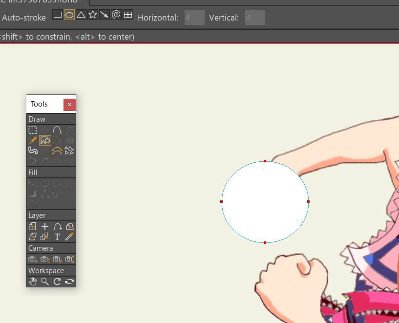

MOHO備忘録：電撃エフェクト
参考にした動画
1. 素材を探す
一番面倒臭い
これでいいや
2. 光球
ベクターレイヤーを追加。適当な図形を手に被せる。
レイヤーの設定を開く。"Allow animated layer effects"に☑し、合成モードを"Add" (加算)にする。
"Noise settings"にあるやつを全部☑し、"Offset"をぶち上げると円が暴れだす。
閉じるときOKを押さないと適応されないので注意
円の色を変更する。水たまりにマウスカーソルがついてるやつ（ツールの名前がわからない）に切り替え、円をクリック（市松模様になる）。
パレットみたいなやつを使い、色を暗めの青色にする。
円を光らせるために加算レイヤーを複製する。レイヤーウィンドウから円のレイヤーを選択した状態で"Reference layer"を4，5回押す。

各レイヤーの設定を開き、ノイズのoffsetを適当にずらす
一番上のレイヤーにアウトラインを付ける。Generalタブから""compositing effects"の可視化に☑、ブラー半径を3くらいに。”Outline”もONに☑し、色を円と同じ色にする。
Ctrl+Rで一時出力。背景が透明だと加算レイヤーが見えにくいので、テスト時は一番下に黒い背景を置いておく。
3. 電撃
ベクターレイヤーを追加。
光球と同じように"Allow animated layer effects"に☑、合成モードを"Add" (加算)にする。ノイズの設定もほぼ一緒、ただし"Noisy fill"は不要なので消す。
ペンツール（？）を開き、適当に電撃を描く。上のチェックボックスは"weld ends"と"auto stroke"以外は消しておくように。
このままだと線がふにゃふにゃなのでカクカクにする。選択ツール(G)ですべての頂点を選択。曲ツール？(C)に切り替え、マウスで左方向にドラッグすると曲度？がゼロになる。
変形ツール（T)で電撃の形を調整。フレームを移動して別のパターンを作る。
いくつかパターンを作ったら、0~2フレーム間隔で並べる。一番最初のフレームを一番後ろにコピペし、保管を”Cycle”に切り替えるとループする。ループ先は1フレーム目ではなく2フレーム目にしないとループする際ダブつくので注意。
さっきと同じ要領でReference layerを連打し、ノイズのOffsetをズラす。
4. 出力
そのままアルファPNGで出力すると加算になってるエフェクトがちゃんと加算されないので、エフェクトのレイヤーは別で出力し、動画内で合成モードを加算にする。
結果
5. おまけ
線の一部のウェイト(W)を0にし”Stroke Exposure”の数値をいじることによって電撃がぐるぐる回るようなエフェクトも作れる。
（ややこしいので元動画を見てください）
ループの調整が面倒になるのが難点。